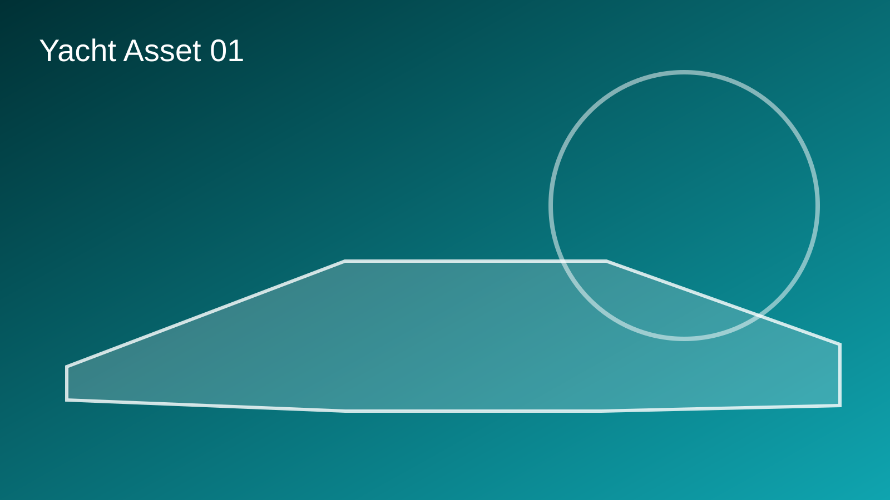
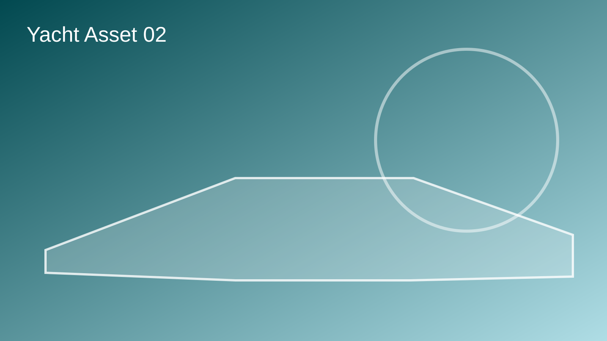
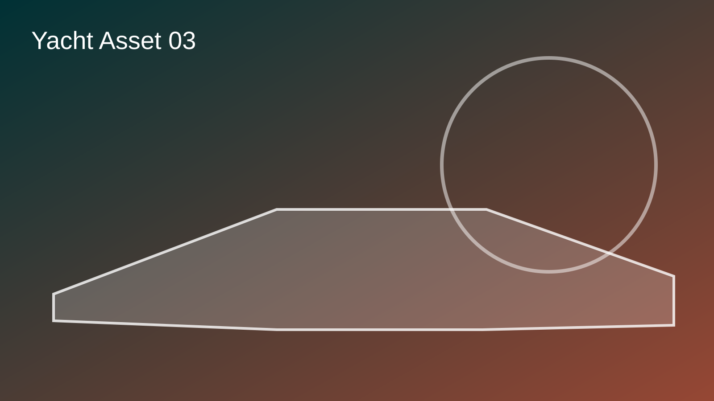
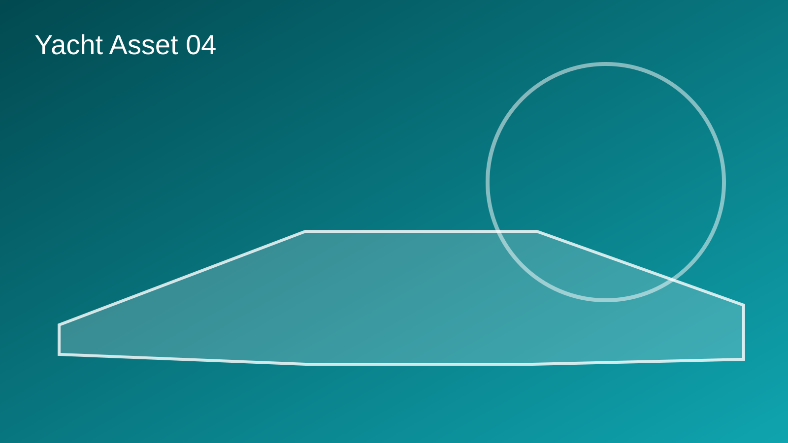
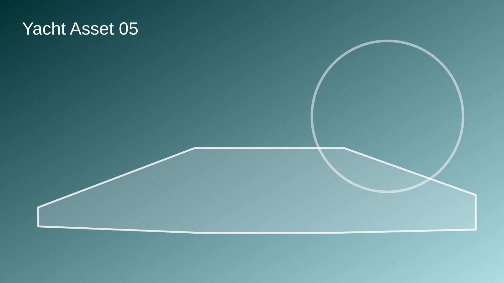

Yacht Engineering Excellence: The Science Behind Ultra-Luxury Vessel Design
The engineering of a modern luxury yacht represents perhaps the most sophisticated convergence of hydrodynamic science, advanced materials technology, and architectural ingenuity ever assembled for maritime applications. Contemporary yacht engineering transcends traditional shipbuilding methodologies, incorporating decades of research, computational modeling, and field-tested innovations to create vessels that perform at levels unimaginable just fifteen years ago. The transformation of hull design, propulsion systems, and structural engineering has fundamentally redefined what constitutes excellence in luxury yachting.
The foundation of superior yacht engineering begins with hull design—the carefully orchestrated geometry that determines how a vessel interacts with water. Modern hull designs employ computational fluid dynamics (CFD) analysis, allowing engineers to simulate millions of potential configurations and identify optimal shapes before any physical construction occurs. These designs must balance multiple competing objectives: minimizing hydrodynamic drag to improve efficiency and maximum speed, maximizing interior volume to accommodate luxurious accommodations, maintaining structural integrity under demanding ocean conditions, and ensuring superior stability during challenging seas. The master engineers at leading yacht design firms spend countless hours refining hull shapes through iterative analysis and testing, producing designs that achieve remarkable reductions in fuel consumption while maintaining or exceeding performance targets.





Advanced material selection stands as another cornerstone of modern yacht engineering excellence. The exclusive use of marine-grade materials—specialized aluminum alloys, carbon fiber composites, fiberglass, and exotic wood species—ensures that vessels remain lightweight yet structurally robust. Carbon fiber, in particular, revolutionized yacht construction by offering strength-to-weight ratios that simply cannot be achieved with traditional materials. A 50-meter yacht constructed with optimized carbon fiber components weighs significantly less than comparable steel or aluminum vessels, resulting in improved speed, fuel efficiency, and handling characteristics. Contemporary yacht builders spend considerable resources sourcing and testing materials from specialized suppliers worldwide, ensuring every component meets exacting standards for durability, safety, and environmental compatibility.
Propulsion technology has undergone equally dramatic evolution, with modern luxury yachts featuring engine systems that represent pinnacles of mechanical engineering. Twin or triple diesel engines commonly power contemporary superyachts, offering redundancy for safety while enabling unprecedented speed and range capabilities. These engines incorporate advanced fuel injection systems, electronic controls, and noise-reduction technology that makes them practically imperceptible within soundproof engine compartments. For environmentally conscious owners, hybrid-electric propulsion systems now offer viable alternatives, combining traditional diesel engines with battery technology to reduce fuel consumption during cruising phases. Some visionary ship designers and owners are even experimenting with hydrogen fuel cells and LNG (liquefied natural gas) systems, pioneering sustainable marine propulsion that may define the industry's future.
Stabilization systems represent another critical engineering innovation that defines modern yacht comfort. Dynamic positioning systems (DPS) allow vessels to maintain precise locations without anchoring—invaluable for positioning near sensitive coral reefs or in unpredictable anchorages. Advanced gyroscopic stabilizers and fin systems counteract rolling motions, creating remarkably stable platforms even in challenging seas. These systems monitor ocean conditions continuously, adjusting stabilizer configurations in real-time to optimize comfort. The integration of these technologies allows passengers to enjoy dining, entertainment, and relaxation with minimal awareness of the vessel's movement, fundamentally transforming the luxury yachting experience.
Navigation and control systems have similarly undergone revolutionary transformation. Modern luxury yachts feature integrated bridge systems combining multiple navigation technologies into unified interfaces. GPS positioning, GLONASS (Russian satellite system), autonomous navigation systems, and traditional celestial navigation capabilities provide extraordinary redundancy and accuracy. Advanced radar and sonar systems provide comprehensive situational awareness, while autopilot systems of remarkable sophistication can maintain courses, avoid obstacles, and optimize fuel consumption through intelligent route planning. These systems are so advanced that many yachts can now cruise extended distances with minimal crew intervention, though most owners maintain experienced captains and full crews to ensure optimal safety and operational excellence.
Electrical systems in contemporary luxury yachts rival those found in major industrial facilities. Multiple independent generators, sophisticated power distribution systems, and backup systems ensure reliable electricity for all vessel systems. Battery systems store emergency power, maintaining critical systems during emergencies. The integration of renewable energy sources—solar panels, wind generators, and even wave energy harvesting—allows forward-thinking yacht owners to reduce fuel consumption while operating sustainably. Sophisticated energy management systems monitor power consumption across all systems, optimizing distribution to ensure maximum efficiency while maintaining all desired amenities.
Water and sanitation systems incorporate specialized technologies that ensure comfort and environmental compliance. Desalination plants generate fresh water from seawater, enabling unlimited freshwater supplies for showers, drinking, and laundry. Advanced wastewater treatment systems ensure that gray water and sewage meet or exceed regulatory standards before discharge, allowing responsible cruising in environmentally sensitive areas. Climate control systems maintain perfect temperature and humidity levels throughout vessel interiors, regardless of external weather conditions or ocean proximity.
The continuous evolution of yacht engineering ensures that each new generation of luxury vessels surpasses predecessors in efficiency, comfort, capability, and environmental responsibility. Investment in research and development, collaboration with leading technical institutions, and openness to revolutionary innovation maintains the yacht industry at the forefront of maritime technology. As proprietary systems and cutting-edge materials continue advancing, future yachts will undoubtedly achieve performance levels that exceed current imagination—further affirming the yacht industry's position as a leader in technological advancement and engineering excellence.